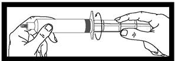
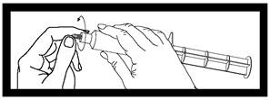

ANNEX
I
SUMMARY OF PRODUCT CHARACTERISTICS
 This medicinal product is
subject to additional monitoring. This will allow quick identification of new
safety information. Healthcare professionals are asked to report any suspected
adverse reactions. See section 4.8 for how to report adverse reactions.
This medicinal product is
subject to additional monitoring. This will allow quick identification of new
safety information. Healthcare professionals are asked to report any suspected
adverse reactions. See section 4.8 for how to report adverse reactions.
1. NAME OF THE
MEDICINAL PRODUCT
Optimark 500 micromol/ml solution for
injection in pre-filled syringe
Optimark 500 micromol/ml solution for
injection in vial
Pre-filled syringe
1 ml contains 330.9 mg gadoversetamide,
equivalent to 500 micromol.
Each 10 ml syringe contains 3309 mg
gadoversetamide equivalent to 5 millimol.
Each 15 ml syringe contains 4963.5 mg
gadoversetamide equivalent to 7.5 millimol.
Each 20 ml syringe contains 6618 mg
gadoversetamide equivalent to 10 millimol.
Each 30 ml syringe contains 9927 mg
gadoversetamide equivalent to 15 millimol.
Excipient(s) with known effect:
20 ml of the solution contain 28.75 mg
sodium.
30 ml of the solution contain 43.13 mg
sodium.
For the full list of excipients, see
section 6.1.
Vial
1 ml contains 330.9 mg gadoversetamide,
equivalent to 500 micromol.
Each 10 ml vial contains 3309 mg
gadoversetamide equivalent to 5 millimol.
Each 15 ml vial contains 4963.5 mg
gadoversetamide equivalent to 7.5 millimol.
Each 20 ml vial contains 6618 mg
gadoversetamide equivalent to 10 millimol.
Excipient(s) with known effect:
20 ml of the solution contain 28.75 mg sodium.
For the full list of excipients, see
section 6.1.
Pre-filled syringe
Solution for injection in pre-filled
syringe.
Vial
Solution for injection in vial.
Clear, colourless to pale yellow solution.
pH: 6.0 – 7.5
Osmolality (37°C): 1000 – 1200
mOsm/kg
4.1 Therapeutic indications
This
medicinal product is for diagnostic use only.
Optimark is
indicated for use with magnetic resonance imaging (MRI) of the central nervous
system (CNS) and liver. It provides contrast enhancement and facilitates
visualization and helps with the characterization of focal lesions and abnormal
structures in the CNS and liver in adult patients and in children of two years
and older with known or highly suspected pathology.
Optimark should only be administered by
physicians experienced in clinical MRI practice.
To enable immediate action in emergencies,
the necessary medicinal products (e.g. epinephrine/ adrenaline, theophylline,
antihistamines, corticosteroids and atropines), endotracheal tube and
ventilator must be immediately available.
Posology
The agent should be administered as a bolus
peripheral intravenous injection at a dose of 0.2 ml/kg (100 micromol/kg)
body weight. To ensure complete injection of the contrast medium, the injection
should be followed by a 5 ml flush of sodium chloride 9 mg/ml (0.9 %) solution
for injection. The imaging procedure should be completed within 1 hour of
administration of the contrast medium.
Repeat dose
In cranial MRI, if a strong clinical
suspicion of a lesion persists despite a single dose contrast-enhanced MRI or
when more accurate information on the number, size or extent of lesions might
influence management or therapy of the patient, in subjects with normal renal
function, a second bolus injection of 0.2ml/kg (100 micromol/kg) may be
administered within 30 minutes of the first injection as it may increase the
diagnostic yield of the examination.
The safety of repeat doses has not been
established in children and adolescents (2 years and older), in patients with
renal impairment, or the elderly. The repeat dose is not recommended in these
populations.
Limited data with other gadolinium contrast
agents suggests that for the exclusion of additional cranial metastases in a patient with a known solitary
resectable metastasis, an MR exam with the injection of the dose of 300
micromol/kg body weight of Optimark may lead to higher diagnostic confidence.
Paediactric population
No dose adjustment is considered necessary
in children more than 2 years of age.
Optimark is contraindicated in neonates up
to 4 weeks of age (see section 4.3).
Use of Optimark is not recommended in
children less than 2 years of age because the safety, efficacy, and
impact of immature kidney function have not been studied in this age group.
Elderly
(aged 65 years and above)
No dose adjustment is considered necessary.
Caution should be exercised in elderly patients (see section 4.4).
Renal and
hepatic impairment
Optimark is contraindicated in patients
with severe renal impairment (GFR < 30 ml/min/1.73m2) and/or
acute renal injury and in patients who have had liver
transplantation or in patients in the perioperative liver transplantation
period (see section 4.3). Optimark should only be used after careful
risk/benefit evaluation in patients with moderate renal impairment (GFR 30-59
ml/min/1.73m2) at a dose not exceeding 100 micromol/kg body
weight (see section 4.4). More than one dose should not be used during a scan.
Because of the lack of information on repeated administration, Optimark
injections should not be repeated unless the interval between injections is at
least 7 days.
Method of administration
The agent should be administered as a bolus
peripheral intravenous injection. To ensure complete injection of the contrast
medium, the injection should be followed by a 5 ml flush of sodium chloride 9
mg/ml (0.9 %) solution for injection. Insertion of a flexible in-dwelling
venous catheter is recommended, see section 4.4.
Optimark must not be administered with an
autoinjector to children of 2 to 11 years (see section 4.4).
Precautions to be taken before handling
or administering the medicinal product
The container and the solution should be
inspected prior to use as described in section 6.6.
Hypersensitivity to gadoversetamide or to
other gadolinium containing products, or to any of the excipients listed in
section 6.1.
Optimark is contraindicated
· in patients with severe renal impairment (GFR
<30ml/min/1.73m2) and/or acute kidney injury,
· in patients who have had liver transplantation
or
· in patients in the perioperative liver
transplantation period and
· in neonates up to 4 weeks of age (see section 4.4).
As with any paramagnetic contrast agent,
enhancement of MRI with gadoversetamide may impair the visualization of
existing lesions. Some of these lesions may be seen on unenhanced, non-contrast
MRI. Therefore, caution should be exercised when contrast enhanced scan
interpretation is made in the absence of a companion unenhanced MRI.
Before the examination, care must be taken
that patients are sufficiently hydrated.
Hypersensitivity
Allergoid and other idiosyncratic reactions
also may occur with gadoversetamide, which could become manifest in form of cardiovascular,
respiratory and skin reactions (see section 4.8). Most of these reactions occur
within half an hour after administering the contrast medium. As with all other
contrast media of the same class, late reactions may occur (after hours or
days) in rare cases; however, none were reported in the completed clinical
trials.
If hypersensitivity reactions occur, the
administration of the contrast medium must be discontinued immediately and
intravenous treatment initiated, if necessary.
During the examination, supervision by a
physician is necessary and insertion of a flexible in-dwelling catheter is
recommended. To enable immediate action in emergencies, the necessary medicinal
products (e.g. epinephrine/adrenaline, theophylline, antihistamines, corticosteroids
and atropines), endotracheal tube and ventilator must be immediately available.
The risk of hypersensitivity reactions is
increased in the following cases:
-
patients with allergic predisposition
-
patients with bronchial asthma; in these
patients it is especially the risk of bronchospasm which is increased
-
patients with a history of reactions to contrast
agents, including a previous history of reaction to iodine-based contrast
agents
Before the injection of contrast media,
patients should be asked whether they have any allergies (e.g. allergies to
seafood or medicinal products, hay fever, urticaria), whether they are
hypersensitive to contrast media and whether they have bronchial asthma.
Premedication with antihistamines and/or glucocorticoids may be considered.
Patients taking beta-blockers
It should be noted that patients using
beta-blockers do not necessarily respond to the beta-agonists usually used for
the treatment of hypersensitivity reactions.
Patients
with cardiovascular disease
In this
group of patients hypersensitivity reactions may be severe. Especially in
patients with serious heart diseases (e.g. severe heart failure, coronary
artery disease) cardiovascular reactions may deteriorate. However, these were
not evident from clinical trials with Optimark.
Central
nervous system disorders
In patients suffering from epilepsy or
brain lesions the likelihood of convulsions during the examination may be
increased. Precautions are necessary when examining these patients (e.g.
monitoring of the patient) and the equipment and medicinal products needed for
the rapid treatment of possible convulsions should be available.
Patients with impaired renal function
Prior to administration of Optimark, all patients should be
screened for renal dysfunction by obtaining laboratory tests.
There have been reports of nephrogenic
systemic fibrosis (NSF) associated with use of Optimark and some
gadolinium-containing contrast agents in patients with acute or chronic severe
renal impairment (GFR <30ml/min/1.73m2) and/or acute kidney
injury. Optimark is contraindicated in these patients (see section 4.3). Patients who have had or are undergoing liver
transplantation are at particular risk since the incidence of acute
renal failure is high in this group. Therefore,
Optimark must not be used in patients who have had or are undergoing liver
transplantation and in neonates (see section 4.3).
The risk for
development of NSF in patients with moderate renal impairment (GFR 30–59 ml/min/1.73 m²) is unknown; therefore
Optimark should only be used after careful risk-benefit
evaluation in patients with moderate renal impairment.
Gadoversetamide is dialysable.
Haemodialysis shortly after Optimark administration may be useful at removing
Optimark from the body. There is no evidence to support the initiation of
haemodialysis for prevention or treatment of NSF in patients not already
undergoing haemodialysis.
In patients with baseline renal impairment,
acute kidney injury requiring dialysis has occurred with the use of Optimark. The
risk of acute kidney injury may increase with an increased dose of the contrast
agent. Administer the lowest dose possible for adequate imaging.
Children
and adolescents
Optimark must not be administered with an
autoinjector. The required dose should be administered by hand to children of 2
to 11 years to avoid overdosage by mistake.
Neonates
and infants
Optimark should not be used in children
below the age of two years. Safety and efficacy have not been studied in this
age group.
Elderly
As the renal clearance of
gadoversetamide may be impaired in the elderly, it is particularly
important to screen patients aged 65 years and older for renal dysfunction.
Sodium
This medicinal product contains less than 1
mmol sodium (23 mg) per dose of up to 17 ml, i.e. it is essentially
‘sodium-free’.
10 ml vials and 15 ml vials contain less
than 1 mmol sodium; i.e. they are essentially ‘sodium free‘.
Higher doses contain 1 mmol sodium or more,
which should be taken into consideration for patients on a controlled sodium
diet.
Pre-filled syringe
20 ml of the solution contain 28.75 mg
sodium.
30 ml of the solution contain 43.13 mg
sodium.
Vial
20 ml of the solution contain 28.75 mg sodium.
Serum
iron and zinc
Caution should be exercised because
transient decreases in serum iron and zinc parameters have been observed in
clinical trials. The clinical significance of this is unknown.
No formal
interaction studies have been performed.
Optimark has been shown to cause
interference in the measurement of serum calcium using the
ortho-cresolphthalein complexone (OCP) colorimetric method. However, the
administration of gadoversetamide does not cause a true decrease in serum
calcium. In the presence of gadoversetamide, the OCP technique produces an
erroneous, low value for plasma calcium. The magnitude of this measurement
artefact is proportional to the concentration of gadoversetamide in the blood,
and in patients with normal renal clearance accurate values can be obtained
approximately 90 minutes following injection. In patients with compromised
renal function, clearance of gadoversetamide will be slowed and the
interference with calcium determination by OCP prolonged. Gadoversetamide
does not affect other methods of measuring serum calcium, such as the arsenazo
III colorimetric method, atomic absorption spectroscopy, and inductively
coupled plasma mass spectroscopy.
Pregnancy
There are no data from the use of gadoversetamide
in pregnant women. Animal studies do not indicate direct or indirect harmful
effects with respect to reproductive toxicity (see section 5.3). Optimark
should not be used during pregnancy unless the clinical condition of the woman
requires use of gadoversetamide.
Breast-feeding
It is unknown whether gadoversetamide is
excreted in human milk. There is insufficient information on the excretion of
gadoversetamide in animal milk. A risk to the suckling child cannot be
excluded. Breast-feeding should be discontinued for at least 24 hours after the
administration of Optimark.
Fertility
Non-clinical data did not reveal special
hazards for humans based on conventional studies of reproductive toxicity.
Clinical studies on fertility have not been performed
Optimark has no or negligible influence on
the ability to drive and use machines.
Ambulant patients while driving vehicles or
operating machinery should take into account that acute dizziness may
uncommonly (≥1/1,000 to <1/100) occur (see section 4.8).
Summary of
the safety profile
Most of the adverse
reactions were of mild to moderate intensity and transient in nature. The most
common adverse reactions were dysgeusia, feeling hot, headache and dizziness.
The majority of adverse reactions observed
after the use of gadoversetamide were found to be adverse reactions of the
nervous system, followed by general adverse reactions, gastrointestinal
disorders/skin and subcutaneous tissue disorders.
Serious adverse reactions have been
reported and include anaphylactic reactions, cardiovascular reactions, and
allergic respiratory disorders. Treatment should be symptomatic and immediate
access to necessary medicinal products and emergency equipment should be
available should a serious event occur.
Tabulated list of adverse reactions
The following adverse reactions have been
reported from clinical trials and from post-marketing use of gadoversetamide.
Within each frequency grouping, undesirable effects are presented in order of
decreasing seriousness.
Local reactions have occurred at the
injection site and may lead to local irritation type reactions.
Cases of nephrogenic systemic
fibrosis (NSF) have been reported with Optimark (see section 4.4). Cases of
gadolinium associated skin plaques, with demonstrated sclerotic bodies on
histology, have been reported with some gadolinium-containing contrast agents
in patients who do not otherwise have symptoms or signs of nephrogenic systemic
fibrosis.
Paediatric population
Optimark has been studied in children of 2
years and older with a similar safety profile as shown in the adult population.
Reporting of
suspected adverse reactions
Reporting suspected adverse reactions after
authorisation of the medicinal product is important. It allows continued
monitoring of the benefit/risk balance of the medicinal product. Healthcare
professionals are asked to report any suspected adverse reactions via the national reporting system listed in Appendix
V.
Gadoversetamide has been tested in humans
in doses up to 700 micromol/kg (seven times the standard dose). Clinical
consequences of an overdose have not been reported. Acute toxicity symptoms are
unlikely to occur in patients with normal renal function. Optimark can be
removed by haemodialysis. However, there is no evidence that haemodialysis is
suitable for prevention of nephrogenic systemic fibrosis
(NSF).
5.1 Pharmacodynamic properties
Pharmacotherapeutic Group: MRI contrast
media, ATC code: V08CA06
Gadoversetamide is a chelate containing
gadolinium - which has paramagnetic properties and is responsible for the
contrast enhancement effect in MRI - and the ligand versetamide.
The purpose of an MRI contrast agent is to
induce signal intensity changes within the lesion thereby facilitating its
recognition from the surrounding normal structures. The use of a contrast agent
may therefore reduce the threshold for lesion detection and visualization.
Gadolinium containing MRI contrast agents (gadolinium-based chelates) are
designed to act indirectly on the local magnetic environment by altering proton
T1 (spin-lattice) and T2 (spin-spin) relaxation times and at the usual
concentration of 100 micromol/kg, the T1 shortening predominates, and the T2
shortening is not significant using T1-weighted sequences.
Gadoversetamide, an extracellular
gadolinium chelate, after intravenous administration, equilibrates rapidly
within the extracellular fluid/space and is eliminated primarily by glomerular
filtration.
As a result of these characteristics, the
timing of the image acquisition after contrast administration is critical in
liver imaging. For liver metastases, the signal difference between the tumour
and surrounding liver tissue is significantly improved during the first 90
seconds after an extracellular gadolinium contrast agent is administered.
Therefore, a rapid imaging sequence should be initiated 20 seconds after bolus injection of the contrast agent
when the agent is predominately in the hepatic arteries and then again at 60
seconds after injection during the dominant portal venous phase. Since the
hepatic artery and portal venous system supply approximately 20% and 80% of the
hepatic blood supply, respectively, the earlier (hepatic arterial phase) images
provide optimal lesion conspicuity for hypervascular lesions and the portal
venous phase images are useful for hypovascular lesions (most metastatic
lesions are relatively hypovascular and are better demonstrated during the
portal venous phase, manifesting as areas of lower signal intensity compared
with the markedly enhanced liver). Lesion conspicuity of hypo- and hypervascular
lesions may be reduced if imaging is delayed more than 3 minutes due to the
diffusion of the contrast agent into the interstitial spaces of both the liver
parenchyma and lesion (e.g. metastasis) making the lesion isointense with the
normal liver parenchyma. Delayed post-contrast or equilibrium images (> 5
minutes after dosing) assist in the characterization of lesions, e.g. the
centre of a metastasis may accumulate contrast in the interstitial space of the
lesion and become hyperintense to the normal liver. This difference in
enhancement pattern is useful in formulating a differential diagnosis based on
lesion characterization and diagnostic confidence.
The enhancement of brain tumours using a
gadolinium (or iodine) containing contrast agent depends on the disruption of
the blood brain barrier (BBB). As a result, these agents have been referred to
as markers for sites of abnormal BBB breakdown. When the BBB is disrupted, the
gadoversetamide molecules diffuse into the interstitial compartment thereby
producing the characteristic paramagnetic effect of T1 and T2 shortening. In
general, the addition of contrast to MRI, at the standard clinical dose of 100
micromol/kg, has led to a significantly improved lesion detection, sensitivity
and diagnostic accuracy.
Distribution
The pharmacokinetics of gadoversetamide
conforms to a two compartment open-model. At the 100 micromol/kg dose, the mean
distribution half life in normal subjects calculated by the method of residuals
in 12 normal volunteers is 13.3 ± 6.8 min. Mean volume of distribution
at the 100 micromol/kg dose in non-renally impaired patients (including both
normal subjects and patients with CNS or liver pathology) was 158.7 ±
29.0 to 214.3 (range 116.4 to 295.0) ml/kg. This volume of distribution
(approximately 10-15 l for a body weight of 70 kg) is consistent with a
medicinal product which distributes into the extracellular fluid. Dose level
has no consistent effect on the volume of distribution in any of the studies. Gadoversetamide
does not undergo protein binding in vitro.
Elimination
The elimination half life at the 100
micromol/kg dose ranges from 1.49 ± 0.15 h in healthy volunteers to 2.11
± 0.62 h in non-renally impaired patients (including normal subjects and
patients with CNS or liver pathology).
The mean plasma clearance of
gadoversetamide in healthy subjects (111.0 ± 14.1 ml/min/1.73m²
BSA) is not significantly different from the mean renal clearance.
Similar results are obtained in normal subjects and patients with various
combinations of liver, CNS and renal dysfunctions with renal clearance of
gadoversetamide being approximately 95% of the total plasma clearance. Such
results (ratio renal clearance/total plasma clearance close to 1) indicate that
gadoversetamide is essentially cleared through the kidneys.
There was no systematic difference in any
of the kinetic parameters as a function of dose level (100 to 700 micromol/kg).
Therefore, within this dose range, the kinetics of gadoversetamide appear to be
linear.
Metabolism
The high accountability for the dose as
intact complex in urine suggests that no significant metabolism of
gadoversetamide occurs in humans.
Special Populations
Effect of Gender:
Adult male and female subjects were
enrolled in two pharmacokinetic studies. No significant differences in
pharmacokinetics based on gender were identified.
Effects of Age:
When corrected for body weight, the total
body clearance of gadoversetamide is greater in the 2 to 11 year age group (143
± 27.9 ml/h/kg) than that observed in the 12 to 18 year age group (117
± 26.1 ml/h/kg) and the two adult populations (82.1 ± 16.8 and
56.5 ± 9.7 ml/h/kg in the 19 to 64 and ≥ 65 year of age groups,
respectively).
The elimination half life in the 2 to 11
and 12 to 18 year age groups (1.4 ± 0.3 and 1.6± 0.3 h-1,
respectively) is shorter than that observed in the two adult populations (1.9
± 0.5 and 2.5± 0.5 h-1 in the 19 to 64 and ≥ 65
year of age groups, respectively). The number of elderly patients in whom the
pharmacokinetics were determined was limited (over 65 years, N=3).
Effect of
Renal Impairment
Gadoversetamide plasma levels increase
linearly with decreasing renal function; in patients with severe renal
impairment (CrCl<30 ml/min) this even leads to a six-fold decreased
gadoversetamide clearance and a corresponding six-fold
increased extent of exposure AUC and t½. Since
gadoversetamide is only administered as a single dose this will lead to a
longer and higher exposure for a limited duration. Still, after 72 hours even
in patients with severe renal impairment nearly the whole dose is recovered in
the urine and in healthy populations up to 500 micromol/kg doses were
administered without safety issues. Nevertheless, because of reported cases of
NSF that may be associated with renal impairment for other gadolinium
containing contrast agents and for gadoversetamide, Optimark should not be used
in these patients.
5.3 Preclinical safety data
Nonclinical data reveal no special hazard
for humans based on conventional studies of safety pharmacology, acute
toxicity, reproductive toxicity, local tolerance, antigenicity, and
genotoxicity. No carcinogenicity studies were performed.
Repeated-dose toxicity studies in rats and
dogs revealed vacuolation of the tubular cells of the kidneys, with strong
evidence for reversibility of the effect. No functional impairment was
observed.
The elimination of Optimark in dogs younger
than 3 months of age was significantly delayed because of immature renal
function and resulted in a high systemic exposure to Optimark. Weekly
repeated dosing of two to twenty times the clinical dose from one week of age
through maturation resulted in extensive mineralization of tissues, which
produced localized effects, such as ulcerative dermatitis, compromised
circulation and hepatic dysfunction.
6.1 List of excipients
Versetamide
Calcium hydroxide
Calcium chloride dihydrate
Sodium hydroxide and/or hydrochloric acid
for pH adjustment
Water for injections
In the absence of compatibility studies,
Optimark should not be mixed with other medicinal products.
3 years.
Chemical and physical in-use stability has
been demonstrated for 24 hours at up to 25°C.
From a microbiological point of view, the
product should be used immediately. If not used immediately, in-use storage
times and conditions prior to use are the responsibility of the user.
Pre-filled
syringe
Keep the
syringe in the outer carton in order to protect from light.
Vial
Keep the
vial in the outer carton in order to protect from light.
Do not
refrigerate or freeze.
For storage
conditions after first opening of the medicinal product, see section 6.3.
Pre-filled syringe
Optimark is filled in pre-filled syringes
made of polypropylene. Syringe tip cap and piston are made of bromobutyl
rubber.
Pack sizes:
1 x 10 ml 10 x 10
ml
1 x 15 ml 10 x 15
ml
1 x 20 ml 10 x 20
ml
1 x 30 ml 10 x 30
ml
Not all pack-sizes
may be marketed.
Vial
Optimark is filled in vials made of
colourless highly resistant borosilicate glass (EP Type I). The vials are
fitted with bromobutyl rubber closures, aluminium cap seals, and plastic flip
caps.
Pack sizes:
1 x 10 ml 10
x 10 ml
1 x 15 ml 10
x 15 ml
1 x 20 ml 10 x 20 ml
Not all pack-sizes may be marketed.
6.6 Special
precautions for disposal and other handling
Optimark is intended for single use only;
any unused portions should be discarded.
Do not use the solution if it is discoloured
or particulate matter is present. If non-disposable equipment is used,
scrupulous care should be taken to prevent residual contamination with traces
of cleansing agents.
Pre-filled syringe
Pre-filled
syringes:
Assembly and
Inspection
Inspect the
syringe for signs of leakage. Do not use if leakage is observed.
|

|
After
screwing the push rod into the syringe piston, it is important to turn the
push rod an additional ½ turn so that the grey piston rotates
freely
|
|

|
Prior to using the syringe, twist off grey
tip cap and discard. Syringe is now ready for needle or infusion tubing
attachment.
|
Discard syringe and unused portion of the
solution after use.
Any unused product or waste material should
be disposed of in accordance with local requirements.
The peel-off tracking label on the
pre-filled syringes should be stuck onto the patient record to enable accurate
recording of the gadolinium contrast agent used. The dose used should also be
recorded.
If electronic patient records are used, the
name of the product, the batch number and the dose should be entered into the
patient record.
Vial
Optimark should be drawn into the syringe
and used immediately.
The product must be examined before use to
confirm that all solids are dissolved and that the container and closure are
undamaged. If solids remain, the vial must be discarded.
Discard syringe and unused portion of the
solution after use.
Any unused product or waste material should
be disposed of in accordance with local requirements.
The peel-off tracking label on the vials
should be stuck onto the patient record to enable accurate recording of the
gadolinium contrast agent used. The dose used should also be recorded. If electronic patient records are used, the
name of the product, the batch number and the dose should be entered into the
patient record.
Guerbet
15, rue des
Vanesses
93420
Villepinte
France
Pre-filled syringe
1 x 10 ml: EU/1/07/398/007
10 x 10 ml: EU/1/07/398/008
1 x 15 ml: EU/1/07/398/009
10 x 15 ml: EU/1/07/398/010
1 x 20 ml: EU/1/07/398/011
10 x 20 ml: EU/1/07/398/012
1 x 30 ml: EU/1/07/398/013
10 x 30 ml EU/1/07/398/014
Vial
1 x 10 ml:
EU/1/07/398/001
10 x 10 ml:
EU/1/07/398/002
1 x 15 ml:
EU/1/07/398/003
10 x 15 ml:
EU/1/07/398/004
1 x 20 ml:
EU/1/07/398/005
10 x 20 ml: EU/1/07/398/006
Date of first authorisation: 23 July 2007
Date of latest renewal: 15 June 2012
10. DATE
OF REVISION OF THE TEXT
Detailed information on this medicinal
product is available on the website of the European Medicines Agency http://www.ema.europa.eu.
ANNEX II
A. MANUFACTURER(S) RESPONSIBLE FOR
BATCH RELEASE
B. CONDITIONS OR RESTRICTIONS
REGARDING SUPPLY AND USE
C. OTHER CONDITIONS AND REQUIREMENTS
OF THE MARKETING AUTHORISATION
D. CONDITIONS OR RESTRICTIONS WITH
REGARD TO THE SAFE AND EFFECTIVE USE OF THE MEDICINAL PRODUCT
A. MANUFACTURER(S)
RESPONSIBLE FOR BATCH RELEASE
Name and address of the manufacturer
responsible for batch release
Mallinckrodt Medical Imaging Ireland
Damastown
Mulhuddart
Dublin 15
Ireland
B. CONDITIONS OR
RESTRICTIONS REGARDING SUPPLY AND USE
Medicinal product subject to restricted
medical prescription. (See Annex I: Summary of Product Characteristics, section
4.2).
C. OTHER
CONDITIONS AND REQUIREMENTS OF THE MARKETING AUTHORISATION
·
Periodic Safety Update Reports
The requirements for submission of periodic
safety update reports for this medicinal product are set out in the list of
Union reference dates (EURD list) provided for under
Article 107c(7) of Directive 2001/83/EC and any subsequent updates published on the
European medicines web-portal.
D. CONDITIONS
OR RESTRICTIONS WITH REGARD TO THE SAFE AND EFFECTIVE USE OF THE MEDICINAL
PRODUCT
·
Risk Management Plan (RMP)
The MAH shall
perform the pharmacovigilance activities detailed in the Pharmacovigilance
Plan, as agreed in RMP presented in Module 1.8.2 of the Marketing Authorisation
and any subsequent updates of the RMP agreed by the Committee for Medicinal
Products for Human Use CHMP.
As per the CHMP
Guideline on Risk Management Systems for medicinal products for human use, the
updated RMP should be submitted at the same time as the next Periodic Safety
Update Report (PSUR).
In addition, an
updated RMP should be submitted
·
When new information is received that may impact
on the current Safety Specification, Pharmacovigilance Plan or risk
minimisation activities
·
Within 60 days of an important
(pharmacovigilance or risk minimisation) milestone being reached
·
At the request of the European Medicines Agency
·
Additional risk minimisation measures
Prior to the launch, the MAA shall provide
to all potential prescribers a copy of the SPC with a cover letter highlighting
the safety information included in Sections 4.3 and 4.4. The text shall be
agreed by the CHMP and shall also contain the following key element:
• Optimark
is not recommended for use in children below the age of two years because the
safety, efficacy, and impact of immature kidney function have not been studied
in this age group. Optimark has been studied in children of 2 years and older
with a similar safety profile as shown in the adult population.
·
Obligation to conduct
post-authorisation measures
The MAH shall complete, within the stated
timeframe, the following measures:
|
Description
|
Due date
|
|
The MAH shall submit annual
cumulative reviews on nephrogenic systemic fibrosis (NSF) cases.
|
July of each year until the results of
the study in bone have been submitted.
|
|
The MAH shall conduct a study evaluating the potential for
long-term accumulation of gadolinium in the bone based on a CHMP agreed
protocol.
|
Final Study Report:
June 2018
|
ANNEX III
LABELLING
AND PACKAGE LEAFLET
A. LABELLING
PARTICULARS
TO APPEAR ON THE OUTER PACKAGING
Text for
the outer packaging of 10 ml, 15 ml, 20 ml and 30 ml pre-filled syringes
1. NAME OF
THE MEDICINAL PRODUCT
Optimark 500 micromol/ml solution for
injection in pre-filled syringe
Gadoversetamide
2. STATEMENT
OF ACTIVE SUBSTANCE(S)
1 ml contains 330.9 mg gadoversetamide,
equivalent to 500 micromol.
Excipients: versetamide, calcium hydroxide,
calcium chloride dihydrate, sodium hydroxide and/or hydrochloric acid, water
for injections.
Please see
package leaflet for further information.
4. PHARMACEUTICAL
FORM AND CONTENTS
Solution
for injection in pre-filled syringe
10 ml (1, 10 syringes)
15 ml (1, 10 syringes)
20 ml (1, 10 syringes)
30 ml (1, 10 syringes)
5. METHOD
AND ROUTE(S) OF ADMINISTRATION
Read the package leaflet before use.
Intravenous use.
6. SPECIAL
WARNING THAT THE MEDICINAL PRODUCT MUST BE STORED OUT OF THE SIGHT AND REACH OF
CHILDREN
Keep out of the sight and reach of
children.
7. OTHER
SPECIAL WARNING(S), IF NECESSARY
Contrast medium for magnetic resonance
imaging
For recording: stick the peel-off tracking label
onto the patient record. For electronic records: enter product name, batch no.
and dose.
EXP
9. SPECIAL
STORAGE CONDITIONS
Keep the syringe in the outer carton in order to
protect from light.
Do not refrigerate or freeze.
10. SPECIAL
PRECAUTIONS FOR DISPOSAL OF UNUSED MEDICINAL PRODUCTS OR WASTE MATERIALS
DERIVED FROM SUCH MEDICINAL PRODUCTS, IF APPROPRIATE
For single use only. Discard any remaining
solution after first use.
11. NAME
AND ADDRESS OF THE MARKETING AUTHORISATION HOLDER
Guerbet, 15,
rue des Vanesses, 93420 Villepinte, France
12. MARKETING
AUTHORISATION NUMBER(S)
EU/1/07/398/007 (1 x 10 ml)
EU/1/07/398/008 (10 x 10 ml)
EU/1/07/398/009 (1 x 15 ml)
EU/1/07/398/010 (10 x 15 ml)
EU/1/07/398/011 (1 x 20 ml)
EU/1/07/398/012 (10 x 20 ml)
EU/1/07/398/013 (1 x 30 ml)
EU/1/07/398/014 (10 x 30 ml)
Lot
14. GENERAL
CLASSIFICATION FOR SUPPLY
Subject to medical prescription.
16. INFORMATION
IN BRAILLE
Justification
for not including Braille accepted
17. UNIQUE IDENTIFIER – 2D BARCODE
Not applicable.
18. UNIQUE IDENTIFIER - HUMAN READABLE DATA
Not applicable.
PARTICULARS
TO APPEAR ON THE IMMEDIATE PACKAGING
Text for
the immediate packaging of 15 ml, 20 ml and 30 ml pre-filled syringes
1. NAME OF
THE MEDICINAL PRODUCT
Optimark 500 micromol/ml solution for
injection in pre-filled syringe
Gadoversetamide
2. STATEMENT
OF ACTIVE SUBSTANCE(S)
1 ml contains 330.9 mg gadoversetamide,
equivalent to 500 micromol.
Excipients: versetamide, calcium hydroxide,
calcium chloride dihydrate, sodium hydroxide and/or hydrochloric acid, water
for injections.
4. PHARMACEUTICAL
FORM AND CONTENTS
Solution
for injection in pre-filled syringe
15 ml
20 ml
30 ml
5. METHOD
AND ROUTE(S) OF ADMINISTRATION
Read the package leaflet before use.
Intravenous use.
6. SPECIAL
WARNING THAT THE MEDICINAL PRODUCT MUST BE STORED OUT OF THE SIGHT AND REACH OF
CHILDREN
Keep out of the sight and reach of
children.
7. OTHER
SPECIAL WARNING(S), IF NECESSARY
This sticky label should be stuck on
patient records.
For electronic records: enter product name,
batch no. and dose.
EXP
9. SPECIAL
STORAGE CONDITIONS
Keep the
syringe in the outer carton in order to protect from light.
Do not refrigerate or freeze.
10. SPECIAL
PRECAUTIONS FOR DISPOSAL OF UNUSED MEDICINAL PRODUCTS OR WASTE MATERIALS
DERIVED FROM SUCH MEDICINAL PRODUCTS, IF APPROPRIATE
For single use only. Discard any remaining
solution after first use.
11. NAME
AND ADDRESS OF THE MARKETING AUTHORISATION HOLDER
Guerbet, 15, rue des Vanesses, 93420
Villepinte, France
12. MARKETING
AUTHORISATION NUMBER(S)
EU/1/07/398/007 (1 x 10 ml)
EU/1/07/398/008 (10 x 10 ml)
EU/1/07/398/009 (1 x 15 ml)
EU/1/07/398/010 (10 x 15 ml)
EU/1/07/398/011 (1 x 20 ml)
EU/1/07/398/012 (10 x 20 ml)
EU/1/07/398/013 (1 x 30 ml)
EU/1/07/398/014 (10 x 30 ml)
Lot
14. GENERAL
CLASSIFICATION FOR SUPPLY
Subject to medical prescription.
16. INFORMATION
IN BRAILLE
Justification
for not including Braille accepted
MINIMUM
PARTICULARS TO APPEAR ON SMALL IMMEDIATE PACKAGING UNITS
Text for
the immediate packaging of the 10 ml pre-filled syringe
1. NAME
OF THE MEDICINAL PRODUCT AND ROUTE(S) OF ADMINISTRATION
Optimark 500 micromol/ml solution for injection
in pre-filled syringe
Gadoversetamide
IV use.
2. METHOD
OF ADMINISTRATION
Read the package leaflet before use.
EXP
Lot
5. CONTENTS
BY WEIGHT, BY VOLUME OR BY UNIT
10 ml
Keep the syringe in the outer carton in
order to protect from light.
Do not refrigerate or freeze.
PARTICULARS
TO APPEAR ON THE OUTER PACKAGING
Text for
the outer packaging of 10 ml, 15 ml and 20 ml vials
1. NAME OF
THE MEDICINAL PRODUCT
Optimark 500 micromol/ml solution for
injection in vial
Gadoversetamide
2. STATEMENT
OF ACTIVE SUBSTANCE(S)
1 ml contains 330.9 mg gadoversetamide,
equivalent to 500 micromol.
Excipients: versetamide, calcium hydroxide,
calcium chloride dihydrate, sodium hydroxide and/or hydrochloric acid, water for
injections.
4. PHARMACEUTICAL
FORM AND CONTENTS
Solution
for injection in vial
10 ml (1, 10 vials)
15 ml (1, 10 vials)
20 ml (1, 10 vials)
5. METHOD
AND ROUTE(S) OF ADMINISTRATION
Read the package leaflet before use.
Intravenous use.
6. SPECIAL
WARNING THAT THE MEDICINAL PRODUCT MUST BE STORED OUT OF THE SIGHT AND REACH OF
CHILDREN
Keep out of the sight and reach of
children.
7. OTHER
SPECIAL WARNING(S), IF NECESSARY
Contrast medium for magnetic resonance imaging
For recording: stick the peel-off tracking
label onto the patient record. For electronic records: enter product name,
batch no. and dose.
EXP
9. SPECIAL
STORAGE CONDITIONS
Keep the
vial in the outer carton in order to protect from light.
Do not refrigerate or freeze.
10. SPECIAL
PRECAUTIONS FOR DISPOSAL OF UNUSED MEDICINAL PRODUCTS OR WASTE MATERIALS
DERIVED FROM SUCH MEDICINAL PRODUCTS, IF APPROPRIATE
For single use only. Discard any remaining
solution after first use.
11. NAME
AND ADDRESS OF THE MARKETING AUTHORISATION HOLDER
Guerbet, 15, rue des Vanesses, 93420
Villepinte, France
12. MARKETING
AUTHORISATION NUMBER(S)
EU/1/07/398/001 (1 x 10 ml)
EU/1/07/398/002 (10 x 10 ml)
EU/1/07/398/003 (1 x 15 ml)
EU/1/07/398/004 (10 x 15 ml)
EU/1/07/398/005 (1 x 20 ml)
EU/1/07/398/006 (10 x 20 ml)
Lot
14. GENERAL
CLASSIFICATION FOR SUPPLY
Subject to medical prescription.
16. INFORMATION
IN BRAILLE
Justification
for not including Braille accepted
17. UNIQUE IDENTIFIER – 2D BARCODE
Not applicable.
18. UNIQUE IDENTIFIER - HUMAN READABLE DATA
Not applicable.
PARTICULARS
TO APPEAR ON THE IMMEDIATE PACKAGING
Text for
the immediate packaging of 15 ml and 20 ml vials
1. NAME OF
THE MEDICINAL PRODUCT
Optimark 500 micromol/ml solution for
injection in vial
Gadoversetamide
2. STATEMENT
OF ACTIVE SUBSTANCE(S)
1 ml contains 330.9 mg gadoversetamide,
equivalent to 500 micromol.
Excipients: versetamide, calcium hydroxide,
calcium chloride dihydrate, sodium hydroxide and/or hydrochloric acid, water
for injections.
4. PHARMACEUTICAL
FORM AND CONTENTS
Solution
for injection in
vial
15 ml
20 ml
5. METHOD
AND ROUTE(S) OF ADMINISTRATION
Read the package leaflet before use.
Intravenous use.
6. SPECIAL
WARNING THAT THE MEDICINAL PRODUCT MUST BE STORED OUT OF THE SIGHT AND REACH OF
CHILDREN
Keep out of the sight and reach of
children.
7. OTHER
SPECIAL WARNING(S), IF NECESSARY
This sticky label should be stuck on
patient records.
For electronic records: enter product name,
batch no. and dose.
EXP
9. SPECIAL
STORAGE CONDITIONS
Keep the
vial in the outer carton in order to protect from light.
Do not refrigerate or freeze.
10. SPECIAL
PRECAUTIONS FOR DISPOSAL OF UNUSED MEDICINAL PRODUCTS OR WASTE MATERIALS
DERIVED FROM SUCH MEDICINAL PRODUCTS, IF APPROPRIATE
For single use only. Discard any remaining
solution after first use.
11. NAME
AND ADDRESS OF THE MARKETING AUTHORISATION HOLDER
Guerbet, 15, rue des Vanesses, 93420
Villepinte, France
12. MARKETING
AUTHORISATION NUMBER(S)
EU/1/07/398/001 (1 x 10 ml)
EU/1/07/398/002 (10 x 10 ml)
EU/1/07/398/003 (1 x 15 ml)
EU/1/07/398/004 (10 x 15 ml)
EU/1/07/398/005 (1 x 20 ml)
EU/1/07/398/006 (10 x 20 ml)
Lot
14. GENERAL
CLASSIFICATION FOR SUPPLY
Subject to medical prescription.
16. INFORMATION
IN BRAILLE
Justification
for not including Braille accepted
MINIMUM
PARTICULARS TO APPEAR ON SMALL IMMEDIATE PACKAGING UNITS
Text for
the immediate packaging of the 10 ml vial
1. NAME
OF THE MEDICINAL PRODUCT AND ROUTE(S) OF ADMINISTRATION
Optimark 500 micromol/ml solution for
injection in vial
Gadoversetamide
IV use.
2. METHOD
OF ADMINISTRATION
Read the package leaflet before use.
EXP
Lot
5. CONTENTS
BY WEIGHT, BY VOLUME OR BY UNIT
10 ml
Keep the vial in the outer carton in order
to protect from light.
Do not refrigerate or freeze.
B. PACKAGE LEAFLET
Package
leaflet: Information for the user
Optimark
500 micromol/ml solution for injection in pre-filled syringe
Gadoversetamide
This medicine is subject to additional
monitoring. This will allow quick identification of new safety information. You
can help by reporting any side effects you may get. See the end of section 4
for how to report side effects.
Read all of this leaflet carefully
before you are being given this medicine because it contains important
information for you.
-
Keep this leaflet. You may need to read it
again.
-
If you have any further questions, ask your
doctor or pharmacist.
-
If you get any side effects talk to your doctor
or pharmacist. This includes any possible side effects not listed in this leaflet. See
section 4.
What is in
this leaflet:
1. What
Optimark is and what it is used for
2. What
you need to know before you are given Optimark
3. How
Optimark is given
4. Possible
side effects
5. How
to store Optimark
6. Contents
of the pack and other information
1. What Optimark is
and what it is used for
Optimark
contains the active substance gadoversetamide. Gadoversetamide is used as a
‘contrast agent’ in magnetic resonance imaging.
Optimark is for diagnostic use, only. It is
used in adult patients and children of two years and older, who are undergoing
magnetic resonance imaging (MRI), a type of scan where images of the internal
organs are taken. Optimark is used to obtain a clearer scan in patients who
have or are thought to have abnormalities in the brain, spine or liver.
2. What you need to
know before you are given Optimark
Do not
use Optimark
if you are allergic
·
to the active substance gadoversetamide
or
·
to any of the other ingredients of
Optimark (see section 6), or
·
to other gadolinium contrast agents.
You must not be
given Optimark if
·
you suffer from severe and/or acute kidney
impairment, or
·
if you are a patient who
is about to have or has had a liver transplant as use of Optimark in patients
with these conditions has been associated with a disease called nephrogenic systemic
fibrosis (NSF). NSF is a disease involving thickening of the skin and
connective tissues. NSF may result in debilitating joint immobility, muscle
weakness or may affect the normal working of internal organs which may potentially
be life-threatening.
·
Optimark must not be used in newborn babies up
to the age of 4 weeks.
Before you receive Optimark, you will need to have a blood
test to check how well your kidneys are working.
Warnings
and precautions
Talk to
your doctor before Optimark is used, if:
- you suffer
from allergies (e.g. medicinal products, seafood, hay fever, hives) or
asthma
- you had
any reactions to previous injections of a contrast agent, including a previous history of reaction to iodine-based
contrast agents
- your kidneys do not work properly
- you have recently had, or soon expect to
have, a liver transplant
- you are feeling thirsty and/or if you have
only had small quantities or nothing to drink before the examination
- you are taking a special kind of antihypertensive
medicine, i.e. a beta-blocker
- you have heart disease
- you suffer from epilepsy or brain lesions
- you are on a controlled sodium diet
If any of these apply to you, your doctor
will decide whether the intended examination is possible or not.
Children and
adolescents
Optimark is not recommended in children who
are below the age of two years.
Other
medicines and Optimark
Please tell your
doctor or pharmacist if you are taking or have recently taken any other
medicines, including medicines obtained without a prescription.
Pregnancy
and breast-feeding
Optimark should not be used during
pregnancy unless strictly necessary.
Breast-feeding should be discontinued for
at least 24 hours after you receive Optimark.
If you are pregnant or breast-feeding, think
you may be pregnant or are planning to have a baby, ask your doctor for advice
before taking this medicine.
Driving
and using machines
If you are an ambulant patient and plan to
drive or use tools or machines, take into account that dizziness may incidentally
occur after you undergo a procedure involving the injection of Optimark. Up to
1 in 100 people may be affected.
Optimark
contains sodium
This medicinal product contains less than 1
mmol sodium (23 mg) per dose of up to 17 ml, i.e. it is essentially
‘sodium-free’.
10 ml vials and 15 ml vials contain less
than 1 mmol sodium; i.e. they are essentially ‘sodium free‘.
Higher doses contain 1 mmol sodium or more,
which should be taken into consideration for patients on a controlled sodium
diet.
20 ml of the solution contain 28.75 mg
sodium.
30 ml of the solution contain 43.13 mg
sodium.
3. How
Optimark is given
Diagnostic
procedures involving the use of contrast agents should be conducted under
supervision of a physician with the prerequisite training and a thorough
knowledge of the procedure to be performed.
The usual dose
The usual dose of
0.2 ml/kg body weight is the same in adults and children of 2 years and older.
It would account for 14 ml for a 70 kg individual, and this volume would be
injected over about 7-14 seconds into a vein, usually a vein in an arm. The
injection is then flushed through with a saline injection to make sure none is
left in the needle or tube used for the injection. In adults, a second dose may
be given within 30 minutes of the first injection. When looking at certain
abnormalities in the brain, Optimark may need to be used at three times the
usual dose in one injection in adults. The doctor will decide how much Optimark
is needed for your examination. You must tell the doctor or nurse/technologist
immediately if you feel pain around the area where the needle is placed.
Dosage in special patient groups
In patients with
moderate kidney problems, more than one dose of Optimark should not be used
during a scan. Optimark injections should not be repeated unless the interval
between injections is at least 7 days.
It is not
necessary to adjust your dose if you are 65 years of age or older but you will
have a blood test to check how well your kidneys are working.
If you are
given more Optimark than you should have been
If too much
Optimark was injected it is unlikely that it will do you much harm, as much
higher doses did not lead to any problems when some people received them. If
your kidneys are working normally it is unlikely you will have any problems.
Optimark can be removed using dialysis. If you think you have been injected
with too much Optimark, tell the doctor or nurse/technologist immediately.
If you have any
further questions on the use of this medicine, ask your doctor or pharmacist.
4. Possible side
effects
Like all medicines, this medicine can cause
side effects, although not everybody gets them.
You must report any of the following
symptoms immediately to the doctor or nurse/technologist, and get immediate
treatment as they can be or can become very serious:
side effects affecting the heart (fainting, extra heart beats, chest pain) or
the respiratory system (shortness of breath, tightening of the airways, swollen
or tight throat, itchy or runny nose, sneezing).
Most of the side effects observed after the
use of Optimark were of mild to moderate intensity and transient in nature. The
most common side effects were a strange taste in the mouth, feeling hot,
headache and dizziness.
Possible side effects are described in
greater detail below.
The frequencies
below and the following symptoms are based on clinical trials, and on the
experience in using Optimark after it was on the market:
|
Frequency
|
Possible
side effects
|
|
Common (may
affect up to 1 in 10 people)
|
headache,
strange taste in the mouth, feeling hot
|
|
Uncommon
(may affect up
to 1 in 100 people)
|
allergic/hypersensitivity
reaction, dizziness, tingling sensation, numbness, reduced sense of smell,
skin red and warm, nasal congestion, sore throat, nausea, diarrhoea, itching,
rash, chest discomfort, chest pain, feeling cold including cold feeling in
extremities, administration site reactions, changes in blood calcium levels
|
|
Rare
(may affect up
to 1 in 1000 people)
|
decreased
appetite, feeling anxious, sleep disorder, drowsy feeling, burning sensation,
a sensation of movement or spinning, ringing in the ears, eyelid redness, eye
pain, vision blurred, bloodshot eyes, awareness of the heartbeat, irregular
heartbeats, extra heartbeats, low blood pressure, shortness of breath,
hoarseness, runny nose, throat constriction, mouth watering, abdominal pain,
constipation, dry mouth, hives, cold sweat, redness, higher blood level of a
substance (creatinine) usually eliminated by the kidneys, blood in urine,
face swollen, weakness and similar symptoms like fatigue and general feeling
of being unwell, fever, swelling in limbs, chill, pain, cold feeling in
extremities, liver enzyme increased, urine analysis abnormal, mineral values
in urine increased, protein in urine, heart and muscle enzyme increased,
decreased haemoglobin, feeling confused and disoriented, shaking, convulsion,
pink eye, fast heart beat, high blood pressure, tightening of the airways,
swollen throat or voice box, raw throat, cough, itchy nose, sneezing,
sweating
|
|
Very rare
(may affect up
to 1 in 10,000 people)
|
swelling
around the eyes, abnormal ECG heart tracing, fainting, vomiting
|
|
Not known
(frequency cannot
be estimated from the available data)
|
hardening of
the skin which may affect also soft tissue and internal organs (nephrogenic
systemic fibrosis), feeling unwell
|
There have been
reports of nephrogenic systemic fibrosis (which causes hardening of the skin
and may affect also soft tissue and internal organs).
When Optimark
was used in children aged 2 or older they had similar side effects as in
adults.
Reporting of side effects
If you get any
side effects, talk to your doctor or pharmacist. This includes any possible
side effects not listed in this leaflet. You can also
report side effects directly via the national
reporting system listed in Appendix
V. By reporting side effects, you can help
provide more information on the safety of this medicine.
5. How to store Optimark
Keep this
medicine out of the sight and reach of children.
Do not use this
medicine after the expiry date which is stated on the carton and on the syringe
label after EXP.
Keep the syringe
in the outer carton in order to protect from light.
Do not
refrigerate or freeze.
The medicine should
be used immediately. If not used immediately, in-use storage times and
conditions prior to use are the responsibility of the user.
Do not use the
solution if it is discoloured or particulate matter is present.
Do not throw
away any medicines via wastewater or household waste. Ask your pharmacist how
to throw away medicines you no longer use. These measures will help protect the
environment.
6. Contents
of the pack and other information
What Optimark contains
·
The active substance is gadoversetamide.
1 ml contains 330.9 mg gadoversetamide, equivalent to
500 micromol.
Each 10 ml syringe contains 3309 mg gadoversetamide.
Each 15 ml syringe contains 4963.5 mg gadoversetamide.
Each 20 ml syringe contains 6618 mg gadoversetamide.
Each 30 ml syringe contains 9927 mg gadoversetamide.
- The other ingredients are: versetamide, calcium
hydroxide, calcium chloride dihydrate, sodium hydroxide and/or
hydrochloric acid, water for injections.
What Optimark
looks like and contents of the pack
Optimark
syringes contain a clear, colourless to pale yellow solution.
Optimark is
supplied in pre-filled syringes made of polypropylene. Syringe tip cap and
piston are made of bromobutyl rubber.
Optimark
pre-filled syringes are supplied in the following package sizes:
1 x 10 ml 10 x 10
ml
1 x 15 ml 10 x 15
ml
1 x 20 ml 10 x 20
ml
1 x 30 ml 10 x 30
ml
Not all package
sizes may be marketed.
Marketing
Authorisation Holder and Manufacturer
Marketing
Authorisation Holder:
Guerbet
15, rue des Vanesses
93420 Villepinte
France
For any information about this medicine,
please contact the Marketing Authorisation Holder.
Manufacturer
Mallinckrodt
Medical Imaging Ireland
Damastown
Mulhuddart,
Dublin 15
Ireland
This leaflet was last revised in
Other sources of information
Detailed information on this medicine is
available on the European Medicines Agency (EMA) web site http://www.ema.europa.eu.
The following
information is intended for healthcare professionals only:
Therapeutic indications
Optimark is indicated for use with magnetic
resonance imaging (MRI) of the central nervous system (CNS) and liver. It
provides contrast enhancement and facilitates visualization and helps with
characterization of focal lesions and abnormal structures in the CNS and liver in
adult patients and in children of two years and older with known or highly
suspected pathology.
Contraindications
- Hypersensitivity to gadoversetamide or to other gadolinium
containing products or to any of the excipients.
- Optimark is contraindicated in patients with severe renal
impairment (GFR < 30ml/min/1.73 m2) and/or acute
kidney injury, in
- patients who have had liver transplantation or in
- patients in the perioperative liver transplantation period and
in
- neonates up to 4 weeks of age.
Special warnings and precautions for use
As with any
paramagnetic contrast agent, enhancement of MRI with Optimark may impair the
visualization of existing lesions. Some of these lesions may be seen on
unenhanced, non-contrast MRI. Therefore, caution should be exercised when
contrast enhanced scan interpretation is made in the absence of a companion
unenhanced MRI.
Before the examination, care must be taken
that patients are sufficiently hydrated.
Hypersensitivity
Allergoid and other idiosyncratic reactions
also may occur with gadoversetamide, which could become manifest in form of
cardiovascular, respiratory and skin reactions. Most of these reactions occur
within half an hour after administering the contrast medium. As with all other
contrast media of the same class, late reactions may occur (after hours or
days) in rare cases; however, none were reported in the completed clinical
trials.
If hypersensitivity reactions occur, the
administration of the contrast medium must be discontinued immediately and
intravenous treatment initiated, if necessary.
During the examination, supervision by a
physician is necessary and insertion of a flexible in-dwelling catheter is
recommended. To enable immediate action in emergencies, the necessary medicinal
products (e.g. epinephrine/adrenaline, theophylline, antihistamines,
corticosteroids and atropines), endotracheal tube and ventilator must be
immediately available.
The risk of hypersensitivity reactions is
increased in the following cases:
-
patients with allergic predisposition
-
patients with bronchial asthma; in these
patients it is especially the risk of bronchospasm which is increased
-
patients with a history of reactions to contrast
agents, including a previous history of reaction to iodine-based contrast
agents
Before the injection of contrast media,
patients should be asked whether they have any allergies (e.g. allergies to
seafood or medicinal products, hay fever, urticaria), whether they are
hypersensitive to contrast media and whether they have bronchial asthma.
Premedication with antihistamines and/or glucocorticoids may be considered.
Patients taking beta-blockers
It should be noted that patients using
beta-blockers do not necessarily respond to the beta-agonists usually used for
the treatment of hypersensitivity reactions.
Patients with cardiovascular disease
In this group of patients hypersensitivity
reactions may be severe. Especially in patients with serious heart diseases
(e.g. severe heart failure, coronary artery disease) cardiovascular reactions
may deteriorate. However, these were not evident from clinical trials with
Optimark.
Central nervous system disorders
In patients suffering from epilepsy or
brain lesions the likelihood of convulsions during the examination may be
increased. Precautions are necessary when examining these patients (e.g.
monitoring of the patient) and the equipment and medicinal products needed for
the rapid treatment of possible convulsions should be available.
Patients with
impaired renal function
Prior to
administration of Optimark, all patients should be screened for renal
dysfunction by obtaining laboratory tests.
There have been
reports of nephrogenic systemic fibrosis (NSF) associated with use of Optimark
and some gadolinium-containing contrast agents in patients with acute or
chronic severe renal impairment (GFR < 30ml/min/1.73 m²)
and/or acute kidney injury. Optimark is contraindicated in these patients (see
section Contraindications). Patients
who have had or are undergoing liver transplantation are at particular risk
since the incidence of acute renal failure is high in this group. Therefore,
Optimark must not be used in patients who have had or are undergoing liver
transplantation and in neonates. The risk for development of NSF in patients with
moderate renal impairment (GFR 30–59 ml/min/1.73
m²) is unknown; therefore, Optimark should only be used after careful risk-benefit evaluation in patients with moderate renal
impairment. Gadoversetamide is dialysable. Haemodialysis shortly after
Optimark administration may be useful at removing Optimark from the body. There
is no evidence to support the initiation of haemodialysis for prevention or
treatment of NSF in patients not already undergoing haemodialysis.
In patients with baseline renal impairment,
acute kidney injury requiring dialysis has occurred with the use of Optimark.
The risk of acute kidney injury may increase with an increased dose of the
contrast agent. Administer the lowest dose possible for adequate imaging.
Children and adolescents
Optimark must
not be administered with an autoinjector. The required dose should be
administered by hand to children of 2 to 11 years to
avoid overdosage by mistake.
Neonates
and infants
Optimark should
not be used in children below the age of two years. Safety and efficacy have
not been studied in this age group.
Elderly
As the renal
clearance of gadoversetamide may be impaired in the elderly, it is particularly
important to screen patients aged 65 years and older for renal dysfunction.
Sodium
This medicinal product contains less than 1
mmol sodium (23 mg) per dose of up to 17 ml, i.e. it is essentially
‘sodium-free’.
10 ml vials and 15 ml vials contain less
than 1 mmol sodium; i.e. they are essentially ‘sodium free‘.
Higher doses contain 1 mmol sodium or more,
which should be taken into consideration for patients on a controlled sodium
diet.
20 ml of the solution contain 28.75 mg
sodium.
30 ml of the solution contain 43.13 mg
sodium.
Serum iron and zinc
Caution should be exercised because
transient decreases in serum iron and zinc parameters have been observed in
clinical trials. The clinical significance of this is unknown.
Fertility,
pregnancy and lactation
Pregnancy
There are no data from the use of
gadoversetamide in pregnant women. Animal studies do not indicate direct or
indirect harmful effects with respect to reproductive toxicity. Optimark should
not be used during pregnancy unless the clinical condition of the woman
requires use of gadoversetamide.
Breast-feeding
It is unknown whether gadoversetamide is
excreted in human milk. There is insufficient information on the excretion of
gadoversetamide in animal milk. A risk to the suckling child cannot be
excluded. Breast-feeding should be discontinued for at least 24 hours after the
administration of Optimark.
Fertility
Nonclinical data did not reveal special
hazards for humans based on conventional studies of reproductive toxicity.
Clinical studies on fertility have not been performed.
Posology and
method of administration
Optimark should only be administered by
physicians experienced in clinical MRI practice.
To enable immediate action in emergencies,
the necessary medicinal products (e.g. epinephrine/ adrenaline, theophylline,
antihistamines, corticosteroids and atropines), endotracheal tube and
ventilator must be immediately available.
Posology
The agent should
be administered as a bolus peripheral intravenous injection at a dose of 0.2
ml/kg (100 micromol/kg) body weight. To ensure complete injection of the
contrast medium, the injection should be followed by a 5 ml flush of sodium chloride
9 mg/ml (0.9 %) solution for injection. The imaging
procedure should be completed within 1 hour of administration of the contrast
medium.
Repeat
dose
In cranial MRI,
if a strong clinical suspicion of a lesion persists despite a single dose
contrast-enhanced MRI or when more accurate information on the number, size or
extent of lesions might influence management or therapy of the patient, in subjects with normal renal function, a second bolus injection of 0.2
ml/kg (100 micromol/kg) may be administered within 30 minutes of the first
injection as it may increase the diagnostic yield of the examination.
The safety of
repeat doses has not been established in children and adolescents (2 years and
older), in patients with renal impairment, or the elderly. The repeat dose is not recommended in these populations.
Limited data
with other gadolinium contrast agents suggests that for the exclusion of
additional cranial metastases in a patient with a known solitary resectable
metastasis, an MR exam with the injection of 300 micromol/kg body weight of
Optimark may lead to higher diagnostic confidence.
Paediatric population
No dose
adjustment is considered necessary in children more than 2 years of age.
Optimark is
contraindicated in neonates up to 4 weeks of age. Use of Optimark is not
recommended in children less than 2 years of age because the safety,
efficacy, and impact of immature kidney function have not been studied in this
age group.
Elderly (aged
65 years and above)
No dosage
adjustment is considered necessary. Caution should be exercised in elderly
patients.
Renal and hepatic impairment
Optimark is
contraindicated in patients with severe renal impairment (GFR < 30
ml/min/1.73 m2) and/or acute renal injury and in patients who
have had liver transplantation or in patients in the perioperative liver
transplantation period. Optimark should only be used after careful risk/benefit
evaluation in patients with moderate renal impairment (GFR 30-59 ml/min/1.73 m2)
at a dose not exceeding 100 micromol/kg body weight. More than one dose
should not be used during a scan. Because of the lack of information on
repeated administration, Optimark injections should not be repeated unless the
interval between injections is at least 7 days.
Method of
administration
The agent should be administered as a bolus
peripheral intravenous injection. To ensure complete injection of the contrast
medium, the injection should be followed by a 5 ml flush of sodium chloride 9
mg/ml (0.9 %) solution for injection. Insertion of a flexible in-dwelling
venous catheter is recommended.
Optimark must not be administered with an
autoinjector to children of 2 to 11 years.
Precautions to be taken before handling
or administering the medicinal product
The container
and the solution should be inspected prior to use.
Interaction with other medicinal products and other forms of
interaction
No formal
interaction studies have been performed.
Gadoversetamide
has been shown to cause interference in the measurement of serum calcium using
the ortho-cresolphthalein complexone (OCP) colorimetric method. However, the
administration of gadoversetamide does not cause a true decrease in serum
calcium. In the presence of gadoversetamide, the OCP technique produces an
erroneous, low value for plasma calcium. The magnitude of this measurement
artefact is proportional to the concentration of gadoversetamide in the blood,
and in patients with normal renal clearance accurate values can be obtained
approximately 90 minutes following injection. In patients with compromised
renal function, clearance of gadoversetamide will be slowed and the
interference with calcium determination by OCP prolonged. Gadoversetamide
does not affect other methods of measuring serum calcium, such as the arsenazo
III colorimetric method, atomic absorption spectroscopy, and inductively
coupled plasma mass spectroscopy.
Special
precautions for disposal and other handling
Optimark is
intended for single use only; any unused portions should be discarded.
Do not use the solution if it is discoloured or particulate matter
is present. If non-disposable equipment is used, scrupulous care should be
taken to prevent residual contamination with traces of cleansing agents.
Pre-filled
syringes:
Assembly and
Inspection
Inspect the syringe for signs of leakage. Do not use if leakage is
observed.
|

|
After screwing the push rod into the
syringe piston, it is important to turn the push rod an additional
½ turn so that the grey piston rotates freely.
|
|
|
Prior to using the syringe, twist off
grey tip cap and discard. Syringe is now ready for needle or infusion tubing
attachment.
|
Discard syringe
and unused portion of the solution after use.
Any unused
product or waste material should be disposed of in accordance with local
requirements.
The peel-off tracking label on the
pre-filled syringes should be stuck onto the patients record to enable accurate
recording of the gadolinium contrast agent used. The dose used should also be
recorded.
If electronic patient records are used, the
name of the product, the batch number and the dose should be entered into the
patient record.
Package
leaflet: Information for the user
Optimark
500 micromol/ml solution for injection in vial
Gadoversetamide
This medicine is subject to additional
monitoring. This will allow quick identification of new safety information. You
can help by reporting any side effects you may get. See the end of section 4
for how to report side effects.
Read all of this leaflet carefully
before you are being given this medicine because it contains important information
for you.
-
Keep this leaflet. You may need to read it
again.
-
If you have any further questions, ask your
doctor or pharmacist.
-
If you get any side effects talk to your doctor
or pharmacist. This includes any possible side effects not listed in this
leaflet. See section 4.
What is
in this leaflet:
1. What
Optimark is and what it is used for
2. What
you need to know before you are given Optimark
3. How
Optimark is given
4. Possible
side effects
5. How
to store Optimark
6. Contents
of the pack and other information
1. What Optimark is
and what it is used for
Optimark
contains the active substance gadoversetamide. Gadoversetamide is used as a
‘contrast agent’ in magnetic resonance imaging.
Optimark is for
diagnostic use, only. It is used in adult patients and children of two years
and older, who are undergoing magnetic resonance imaging (MRI), a type of scan
where images of the internal organs are taken. Optimark is used to obtain a clearer
scan in patients who have or are thought to have abnormalities in the brain,
spine or liver.
2. What you need to
know before you are given Optimark
Do not use Optimark
if you are allergic
·
to the active substance gadoversetamide
or
·
to any of the other ingredients of
Optimark (see section 6), or
·
to other gadolinium contrast agents.
You must not be
given Optimark if
·
you suffer from severe and/or acute kidney
impairment, or
·
if you are a patient who is about to have or has
had a liver transplant as use of Optimark in patients with these conditions has
been associated with a disease called nephrogenic systemic fibrosis (NSF). NSF
is a disease involving thickening of the skin and connective tissues. NSF may
result in debilitating joint immobility, muscle weakness or may affect the
normal working of internal organs which may potentially be life-threatening.
·
Optimark must not be used in newborn babies up
to the age of 4 weeks.
Before you receive Optimark, you will need to have a blood
test to check how well your kidneys are working.
Warnings
and precautions
Talk to
your doctor before Optimark is used, if:
- you suffer
from allergies (e.g. medicinal products, seafood, hay fever, hives) or
asthma
- you had
any reactions to previous injections of a contrast agent, including a previous history of reaction to iodine-based contrast
agents
- your
kidneys do not work properly
- you have recently had, or soon expect to
have, a liver transplant
- you are feeling thirsty and/or if you
have only had small quantities or nothing to drink before the examination
- you are taking a special kind of
antihypertensive medicine, i.e. a beta-blocker
- you have heart disease
- you suffer from epilepsy or brain lesions
- you are on a controlled sodium diet
If any of these apply to you, your doctor
will decide whether the intended examination is possible or not.
Children and
adolescents
Optimark is not recommended in children who
are below the age of two years.
Other
medicines and Optimark
Please tell your
doctor or pharmacist if you are taking or have recently taken any other
medicines, including medicines obtained without a prescription.
Pregnancy
and breast-feeding
Optimark should not be used during
pregnancy unless strictly necessary.
Breast-feeding should be discontinued for
at least 24 hours after you receive Optimark.
If you are pregnant or breast-feeding,
think you may be pregnant or are planning to have a baby, ask your doctor for
advice before taking this medicine.
Driving
and using machines
If you are an ambulant patient and plan to
drive or use tools or machines, take into account that dizziness may
incidentally occur after you undergo a procedure involving the injection of
Optimark.
Up to 1 in 100 people may be affected.
Optimark
contains sodium
This medicinal product contains less than 1
mmol sodium (23 mg) per dose of up to 17 ml, i.e. it is essentially
‘sodium-free’.
10 ml vials and 15 ml vials contain less
than 1 mmol sodium; i.e. they are essentially ‘sodium free‘.
Higher doses contain 1 mmol sodium or more,
which should be taken into consideration for patients on a controlled sodium diet.
20 ml of the solution contain 28.75 mg
sodium.
3. How
Optimark is given
Diagnostic procedures involving the use of
contrast agents should be conducted under supervision of a physician with the
prerequisite training and a thorough knowledge of the procedure to be
performed.
The usual dose
The usual dose of
0.2 ml/kg body weight is the same in adults and children of 2 years and older.
It would account
for 14 ml for a 70 kg individual, and this volume would be injected over about
7-14 seconds into a vein, usually a vein in an arm. The injection is then
flushed through with a saline injection to make sure none is left in the needle
or tube used for the injection.
In adults, a second
dose may be given within 30 minutes of the first injection. When looking at
certain abnormalities in the brain, Optimark may need to be used at three times
the usual dose in one injection in adults. The doctor will decide how much
Optimark is needed for your examination. You must tell the doctor or
nurse/technologist immediately if you feel pain around the area where the
needle is placed.
Dosage in special patient groups
In patients with
moderate kidney problems, more than one dose of Optimark should not be used
during a scan. Optimark injections should not be repeated unless the interval
between injections is at least 7 days.
It is not
necessary to adjust your dose if you are 65 years of age or older but you will
have a blood test to check how well your kidneys are working.
If you are
given more Optimark than you should have been
If too much
Optimark was injected it is unlikely that it will do you much harm, as much
higher doses did not lead to any problems when some people received them. If
your kidneys are working normally it is unlikely you will have any problems.
Optimark can be removed using dialysis. If you think you have been injected
with too much Optimark, tell the doctor or nurse/technologist immediately.
If you have any
further questions on the use of this medicine, ask your doctor or pharmacist.
4. Possible side
effects
Like all medicines, this medicine can cause
side effects, although not everybody gets them.
You must report any of the following
symptoms immediately to the doctor or nurse/technologist, and get immediate
treatment as they can be or can become very serious:
side effects affecting the heart (fainting, extra heart beats, chest pain) or
the respiratory system (shortness of breath, tightening of the airways, swollen
or tight throat, itchy or runny nose, sneezing).
Most of the side effects observed after the
use of Optimark were of mild to moderate intensity and transient in nature. The
most common side effects were a strange taste in the mouth, feeling hot,
headache and dizziness.
Possible side effects are described in
greater detail below.
The frequencies
below and the following symptoms are based on clinical trials, and on the
experience in using Optimark after it was on the market:
|
Frequency
|
Possible
side effects
|
|
Common
(may affect up
to 1 in 10 people)
|
headache,
strange taste in the mouth, feeling hot
|
|
Uncommon
(may affect up
to 1 in 100 people)
|
allergic/hypersensitivity
reaction, dizziness, tingling sensation, numbness, reduced sense of smell,
skin red and warm, nasal congestion, sore throat, nausea, diarrhoea, itching,
rash, chest discomfort, chest pain, feeling cold including cold feeling in
extremities, administration site reactions, changes in blood calcium levels
|
|
Rare
(may affect up
to 1 in 1000 people)
|
decreased
appetite, feeling anxious, sleep disorder, drowsy feeling, burning sensation,
a sensation of movement or spinning, ringing in the ears, eyelid redness, eye
pain, vision blurred, bloodshot eyes, awareness of the heartbeat, irregular
heartbeats, extra heartbeats, low blood pressure, shortness of breath,
hoarseness, runny nose, throat constriction, mouth watering, abdominal pain,
constipation, dry mouth, hives, cold sweat, redness, higher blood level of a
substance (creatinine) usually eliminated by the kidneys, blood in urine,
face swollen, weakness and similar symptoms like fatigue and general feeling
of being unwell, fever, swelling in limbs, chill, pain, cold feeling in
extremities, liver enzyme increased, urine analysis abnormal, mineral values
in urine increased, protein in urine, heart and muscle enzyme increased,
decreased haemoglobin, feeling confused and disoriented, shaking, convulsion,
pink eye, fast heart beat, high blood pressure, tightening of the airways,
swollen throat or voice box, raw throat, cough, itchy nose, sneezing,
sweating
|
|
Very rare
(may affect up
to 1 in 10,000 people)
|
swelling
around the eyes, abnormal ECG heart tracing, fainting, vomiting
|
|
Not known
(frequency
cannot be estimated from the available data)
|
hardening of
the skin which may affect also soft tissue and internal organs (nephrogenic
systemic fibrosis), feeling unwell
|
There have been
reports of nephrogenic systemic fibrosis (which causes hardening of the skin
and may affect also soft tissue and internal organs).
When Optimark
was used in children aged 2 or older they had similar side effects as in
adults.
Reporting of side effects
If you get any
side effects, talk to your doctor or pharmacist. This includes any possible
side effects not listed in this leaflet. You can also
report side effects directly via the national reporting system listed in Appendix
V. By reporting side effects, you can help provide
more information on the safety of this medicine.
5. How
to store Optimark
Keep this
medicine out of the sight and reach of children.
Do not use this
medicine after the expiry date which is stated on the carton and on the vial
label after EXP.
Keep the vial in
the outer carton in order to protect from light.
Do not
refrigerate or freeze.
The medicine
should be used immediately. If not used immediately, in-use storage times and
conditions prior to use are the responsibility of the user.
Do not use the
solution if it is discoloured or particulate matter is present.
Do not throw
away any medicines via wastewater or household waste. Ask your pharmacist how
to throw away medicines you no longer use. These measures will help protect the
environment.
6. Contents
of the pack and other information
What Optimark contains
·
The active substance is gadoversetamide.
1 ml contains 330.9 mg gadoversetamide, equivalent to 500 micromol.
Each 10 ml vial contains 3309 mg gadoversetamide.
Each 15 ml vial contains 4963.5 mg gadoversetamide.
Each 20 ml vial contains 6618 mg gadoversetamide.
·
The other ingredients are: versetamide,
calcium hydroxide, calcium chloride dihydrate, sodium hydroxide and/or
hydrochloric acid, water for injections.
What Optimark
looks like and contents of the pack
Optimark vials
contain a clear, colourless to pale yellow solution.
Optimark is
supplied in vials, fitted with bromobutyl rubber closures and aluminium cap
seals.
Optimark vials are supplied in the following package sizes:
1 x 10 ml 10 x 10
ml
1 x 15 ml 10 x 15
ml
1 x 20 ml 10 x 20
ml
Not all package
sizes may be marketed.
Marketing
Authorisation Holder and Manufacturer
Marketing
Authorisation Holder:
Guerbet
15, rue des Vanesses
93420 Villepinte
France
For any information about this medicine,
please contact the Marketing Authorisation Holder.
Manufacturer
Mallinckrodt
Medical Imaging Ireland
Damastown
Mulhuddart,
Dublin 15
Ireland
This leaflet was last revised in
Other sources of information
Detailed information on this medicine is
available on the European Medicines Agency (EMA) web site http://www.ema.europa.eu.
The following
information is intended for healthcare professionals only:
Therapeutic indications
Optimark is
indicated for use with magnetic resonance imaging (MRI) of the central nervous
system (CNS) and liver. It provides contrast enhancement and facilitates
visualization and helps with characterization of focal lesions and abnormal
structures in the CNS and liver in adult patients and in children of two years
and older with known or highly suspected pathology.
Contraindications
- Hypersensitivity to gadoversetamide or to other gadolinium
containing products or to any of the excipients.
- Optimark is contraindicated in patients with severe renal
impairment (GFR < 30ml/min/1.73 m²) and/or acute kidney
injury, in
- patients who have had liver transplantation or in
- patients in the perioperative liver transplantation period and
in
- neonates up to 4 weeks of age.
Special warnings and precautions for use
As with any
paramagnetic contrast agent, enhancement of MRI with Optimark may impair the
visualization of existing lesions. Some of these lesions may be seen on
unenhanced, non-contrast MRI. Therefore, caution should be exercised when
contrast enhanced scan interpretation is made in the absence of a companion
unenhanced MRI.
Before the examination, care must be taken
that patients are sufficiently hydrated.
Hypersensitivity
Allergoid and other idiosyncratic reactions
also may occur with gadoversetamide, which could become manifest in form of
cardiovascular, respiratory and skin reactions. Most of these reactions occur
within half an hour after administering the contrast medium. As with all other
contrast media of the same class, late reactions may occur (after hours or
days) in rare cases; however, none were reported in the completed clinical
trials.
If hypersensitivity reactions occur, the
administration of the contrast medium must be discontinued immediately and
intravenous treatment initiated, if necessary.
During the examination, supervision by a
physician is necessary and insertion of a flexible in-dwelling catheter is
recommended. To enable immediate action in emergencies, the necessary medicinal
products (e.g. epinephrine/adrenaline, theophylline, antihistamines,
corticosteroids and atropines), endotracheal tube and ventilator must be
immediately available.
The risk of hypersensitivity reactions is
increased in the following cases:
-
patients with allergic predisposition
-
patients with bronchial asthma; in these
patients it is especially the risk of bronchospasm which is increased
-
patients with a history of reactions to contrast
agents, including a previous history of reaction to iodine-based contrast
agents
Before the injection of contrast media, patients
should be asked whether they have any allergies (e.g. allergies to seafood or
medicinal products, hay fever, urticaria), whether they are hypersensitive to
contrast media and whether they have bronchial asthma. Premedication with
antihistamines and/or glucocorticoids may be considered.
Patients
taking beta-blockers
It should be noted that patients using
beta-blockers do not necessarily respond to the beta-agonists usually used for
the treatment of hypersensitivity reactions.
Patients with cardiovascular disease
In this group of patients hypersensitivity
reactions may be severe. Especially in patients with serious heart diseases
(e.g. severe heart failure, coronary artery disease) cardiovascular reactions
may deteriorate. However, these were not evident from clinical trials with
Optimark.
Central nervous system disorders
In patients suffering from epilepsy or
brain lesions the likelihood of convulsions during the examination may be
increased. Precautions are necessary when examining these patients (e.g.
monitoring of the patient) and the equipment and medicinal products needed for
the rapid treatment of possible convulsions should be available.
Patients with
impaired renal function
Prior to
administration of Optimark, all patients should be screened for renal dysfunction
by obtaining laboratory tests.
There have been
reports of nephrogenic systemic fibrosis (NSF) associated with use of Optimark
and some gadolinium-containing contrast agents in patients with acute or
chronic severe renal impairment (GFR < 30ml/min/1.73 m²)
and/or acute kidney injury. Optimark is contraindicated in these patients (see
section Contraindications). Patients
who have had or are undergoing liver transplantation are at particular risk
since the incidence of acute renal failure is high in this group. Therefore,
Optimark must not be used in patients who have had or are undergoing liver
transplantation and in neonates. The risk for development of NSF in patients with
moderate renal impairment (GFR 30–59 ml/min/1.73 m2)
is unknown; therefore, Optimark should only be used after careful risk-benefit evaluation in patients with moderate renal
impairment. Gadoversetamide is dialysable. Haemodialysis shortly after
Optimark administration may be useful at removing Optimark from the body. There
is no evidence to support the initiation of haemodialysis for prevention or
treatment of NSF in patients not already undergoing haemodialysis.
In patients with baseline renal impairment,
acute kidney injury requiring dialysis has occurred with the use of Optimark.
The risk of acute kidney injury may increase with an increased dose of the
contrast agent. Administer the lowest dose possible for adequate imaging.
Children and adolescents
Optimark must not be administered with an
autoinjector. The required dose should be administered by hand to children of 2 to 11 years to avoid overdosage by mistake.
Neonates and infants
Optimark should
not be used in children below the age of two years. Safety and efficacy have
not been studied in this age group.
Elderly
As the renal
clearance of gadoversetamide may be impaired in the elderly, it is particularly
important to screen patients aged 65 years and older for renal dysfunction.
Sodium
This medicinal product contains less than 1
mmol sodium (23 mg) per dose of up to 17 ml, i.e. it is essentially
‘sodium-free’.
10 ml vials and 15 ml vials contain less
than 1 mmol sodium; i.e. they are essentially ‘sodium free‘.
Higher doses contain 1 mmol sodium or more,
which should be taken into consideration for patients on a controlled sodium
diet.
20 ml of the solution contain 28.75 mg
sodium.
Serum iron and zinc
Caution should be exercised because
transient decreases in serum iron and zinc parameters have been observed in
clinical trials. The clinical significance of this is unknown.
Fertility,
pregnancy and lactation
Pregnancy
There are no data from the use of
gadoversetamide in pregnant women. Animal studies do not indicate direct or
indirect harmful effects with respect to reproductive toxicity. Optimark should
not be used during pregnancy unless the clinical condition of the woman
requires use of gadoversetamide.
Breast-feeding
It is unknown whether gadoversetamide is
excreted in human milk. There is insufficient information on the excretion of
gadoversetamide in animal milk. A risk to the suckling child cannot be
excluded. Breast-feeding should be discontinued for at least 24 hours after the
administration of Optimark.
Fertility
Nonclinical data did not reveal special
hazards for humans based on conventional studies of reproductive toxicity.
Clinical studies on fertility have not been performed.
Posology and method of administration
Optimark should only be administered by
physicians experienced in clinical MRI practice.
To enable immediate action in emergencies,
the necessary medicinal products (e.g. epinephrine/ adrenaline, theophylline,
antihistamines, corticosteroids and atropines), endotracheal tube and
ventilator must be immediately available.
Posology
The agent should
be administered as a bolus peripheral intravenous injection at a dose of 0.2
ml/kg (100 micromol/kg) body weight. To ensure complete injection of the
contrast medium, the injection should be followed by a 5 ml flush of sodium
chloride 9 mg/ml (0.9 %) solution for injection.
The imaging procedure should be completed within 1 hour of administration of
the contrast medium.
Repeat dose
In cranial MRI, if a strong clinical suspicion of a lesion persists
despite a single dose contrast-enhanced MRI or when more accurate information
on the number, size or extent of lesions might influence management or therapy
of the patient, in subjects with normal renal function,
a second bolus injection of 0.2 ml/kg (100 micromol/kg) may be administered
within 30 minutes of the first injection as it may increase the diagnostic yield
of the examination.
The safety of repeat doses has not been established in children and
adolescents (2 years and older), in patients with renal impairment, or the
elderly. The repeat dose is not recommended in these
populations.
Limited data
with other gadolinium contrast agents suggests that for the exclusion of
additional cranial metastases in a patient with a known solitary resectable
metastasis, an MR exam with the injection of 300 micromol/kg body weight of
Optimark may lead to higher diagnostic confidence.
Paediatric population
No dose
adjustment is considered necessary in children more than 2 years of age.
Optimark is
contraindicated in neonates up to 4 weeks of age. Use of Optimark is not
recommended in children less than 2 years of age because the safety,
efficacy, and impact of immature kidney function have not been studied in this
age group.
Elderly (aged 65 years and above)
No dosage
adjustment is considered necessary. Caution should be exercised in elderly
patients.
Renal and hepatic
impairment
Optimark is
contraindicated in patients with severe renal impairment (GFR < 30
ml/min/1.73 m²) and/or acute renal injury and in patients who have
had liver transplantation or in patients in the perioperative liver
transplantation period. Optimark should only be used after careful risk/benefit
evaluation in patients with moderate renal impairment (GFR 30-59 ml/min/1.73 m2)
at a dose not exceeding 100 micromol/kg body weight. More than one dose
should not be used during a scan. Because of the lack of information on
repeated administration, Optimark injections should not be repeated unless the
interval between injections is at least 7 days.
Method of administration
The agent should be administered as a bolus
peripheral intravenous injection. To ensure complete injection of the contrast
medium, the injection should be followed by a 5 ml flush of sodium chloride 9
mg/ml (0.9 %) solution for injection. Insertion of a flexible in-dwelling
venous catheter is recommended.
Optimark must not be administered with an
autoinjector to children of 2 to 11 years.
Precautions to be taken before handling
or administering the medicinal product
The container
and the solution should be inspected prior to use.
Interaction
with other medicinal products and other forms of interaction
No formal
interaction studies have been performed.
Gadoversetamide has been shown to cause
interference in the measurement of serum calcium using the
ortho-cresolphthalein complexone (OCP) colorimetric method. However, the
administration of gadoversetamide does not cause a true decrease in serum
calcium. In the presence of gadoversetamide, the OCP technique produces an
erroneous, low value for plasma calcium. The magnitude of this measurement
artefact is proportional to the concentration of gadoversetamide in the blood,
and in patients with normal renal clearance accurate values can be obtained
approximately 90 minutes following injection. In patients with compromised
renal function, clearance of gadoversetamide will be slowed and the
interference with calcium determination by OCP prolonged. Gadoversetamide
does not affect other methods of measuring serum calcium, such as the arsenazo
III colorimetric method, atomic absorption spectroscopy, and inductively
coupled plasma mass spectroscopy.
Special precautions for disposal and
other handling
Optimark is intended for single use only;
any unused portions should be discarded.
Optimark should
be drawn into the syringe and used immediately.
Do not use the
solution if it is discoloured or particulate matter is present. If
non-disposable equipment is used, scrupulous care should be taken to prevent
residual contamination with traces of cleansing agents.
The product must
be examined before use to confirm that all solids are dissolved and that the
container and closure are un-damaged. If solids remain, the vial must be
discarded.
Discard syringe and unused portion of the
solution after use.
Any unused product or waste material should
be disposed of in accordance with local requirements.
The peel-off tracking label on the vials should be stuck onto the patients
record to enable accurate recording of the gadolinium contrast agent used. The
dose used should also be recorded. If electronic
patient records are used, the name of the product, the batch number and the
dose should be entered into the patient record.